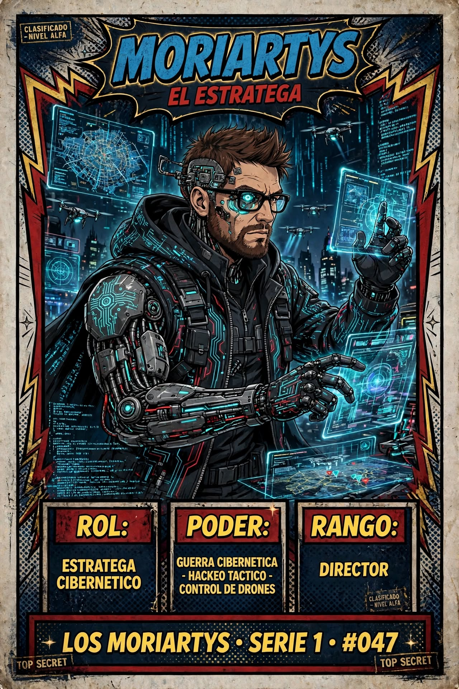

ARCHIVO DE LA LEGIÓN · 2026BITÁCORA
BITÁCORA
MULTIVERSAL
Personas, misiones, colaboraciones y nuevas historias.
EDICIÓN INTERACTIVA · ABRIR EL LEGAJO
Un registro vivo de personas, capítulos, actividad y experiencias compartidas. Pasá las páginas para recorrer el archivo; cada sección enlaza con su capítulo correspondiente en el sitio principal.

Personas, misiones, colaboraciones y nuevas historias.
EDICIÓN INTERACTIVA · ABRIR EL LEGAJO
El sonido está desactivado de forma predeterminada. Podés activarlo cuando quieras.
La misma colección que vive en el Roster. Elegí un expediente para abrir su perfil completo en el archivo principal.
Conectando con el registro oficial del Roster…
Los perfiles se cargan desde roster-data.json; no se mantienen copias paralelas de nombres, roles o imágenes en esta página.